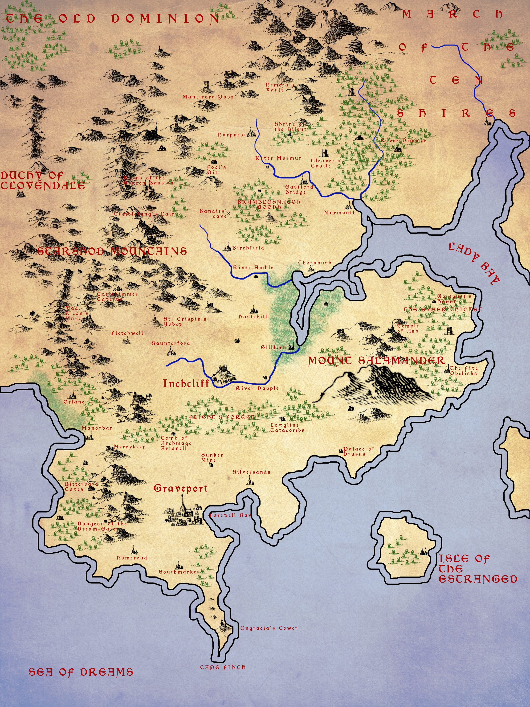

Arrowmoor
Arrowmoor is an independent duchy and the starting location of the campaign. It is a battleground in the cold war between the Old Dominion and The Combine.

Overview
The duchy is made up of eight counties and the ducal demesne itself. Roughly two-thirds of the population follow the Old Gods, about a quarter are Congregant, with followers of The Three in larger towns and isolated Wayfinder hermits.
Key Locations
Castle Redcliff
Seat of the Dukes. A long, thin castle built on a high ridge overlooking a river bend (inspired by Burghausen or Karak). The castle is reachable only at one point, on its shortest side, making it virtually impossible to take by conventional assault. The castle town sits down the hill on the river bank, about thirty minutes’ walk away.
Graveport
The major city of Arrowmoor and the duchy’s only deepwater port, which The Combine is steadily working to bring under its control through the mayoralty of Rafe Newbuck. Famous for the Temple of the Mournful Sea, the principal cult-site of the Mournful Sea persona of the Wise One. See Graveport.
The Delian Tomb
The adventure begins here. Slavers have been using the tomb as a hideout. Beneath it lies the entrance to an ancient vault connected to the high-level campaign plot — but the door cannot be opened at first. Several keyholes are visible, only one of which has a key.
Other Locations
- Orlane — a village
- Birchfield (Hommlet) — a village, where the campaign began
- Inchcliff — a town with a lycanthrope circle
- Thornbush Town — seat of Baroness Ginevra
- Gillfern — a settlement
- The Blind Carpenters’ Thumb — a tavern frequented by adventurers
- The Painted Lady — a pub in Orlane
- Abbey of St. Crispin — a Congregation abbey with lordship over an area equivalent to a county
Major Figures
| Role | Name | Origin | Allegiance |
|---|---|---|---|
| Duchess | Ethel | Arrowmoor | Old Dominion |
| Heir | Oswin | Arrowmoor | — |
| Count of Merrykeep, Lord Treasurer | Bertrand | Arrowmoor | The Combine |
| Court Magician (Old Dominion rep.) | Modwen of Hallow | Old Dominion | Old Dominion |
| Combine Manager | Rabea (RAH-bee-uh) | Godspires | The Combine |
| Congregation Abbot | Marcellus (mar-SEL-uhs) | High Elf | Congregation |
| Kin Boss | The Carver | Arrowmoor | The Kin |
| League Ambassador | Sir Kees Cleatwell | League | The League |
| Lord Marshall | Clarimond | Arrowmoor | Old Dominion |
| Lord Chamberlain | Aelfric (AL-frick) | Arrowmoor | — |
| Captain of the Guard | Chrysanta (kri-san-tuh) | Arrowmoor | The Combine |
| Court Goblin | Alethea (a-LETH-ee-a) | Goblin | Neutral |
| Mayor of Graveport | Rafe Newbuck | Arrowmoor | The Combine |
| High Priest of the Mournful Sea | Eirian (ay-ree-an) | Arrowmoor | — |
| Duchess’s Physician | Lavena | Arrowmoor | — |
The Succession Crisis
The ageing Duchess Ethel, aligned with the Old Dominion, rules with her ten-year-old heir Oswin. Count Bertrand of Merrykeep — the Duchess’s cousin, a tall, bald but handsome man with an unctuous manner — has the Combine’s backing to seize power. The Count will eventually have the Duchess murdered and Oswin kidnapped, assuming power as head of a regency council. The Captain of the Guard betrays the Duchess.
The Court Magician Modwen suspects foul play and is friendly to the party. The Court Goblin Alethea seeks to play both sides to retain her position.
See also
- Old Dominion — traditional patron of the duchy
- The Combine — seeking to control Graveport
- The Party — the adventurers who shaped Arrowmoor’s fate
- Regions of Moonrise